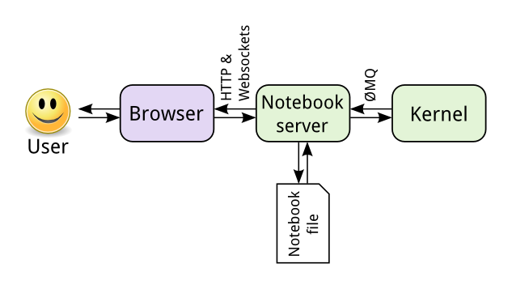
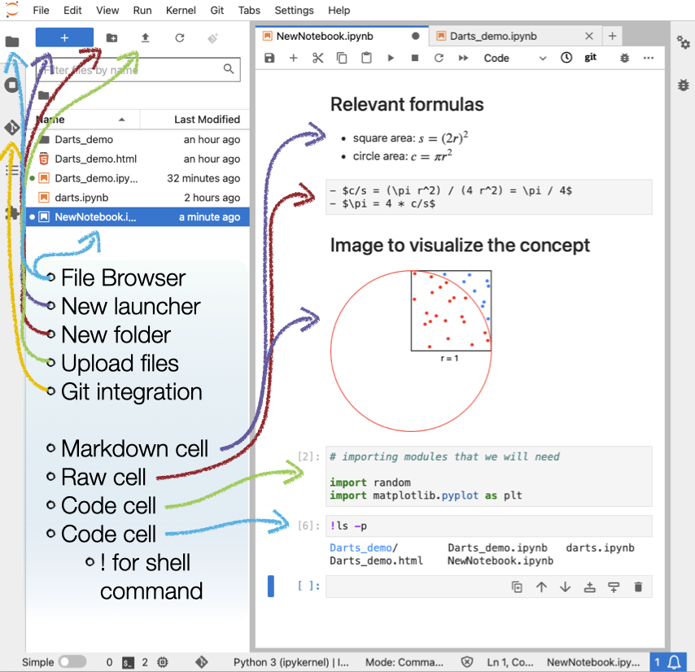

JupyterLab: A Quick Introduction
This is a short reference page for learners who have never used JupyterLab before. It covers only what you need to get started.
Images and content on this page are adapted from the CodeRefinery Jupyter lesson (CC-BY).
What is JupyterLab?
JupyterLab is the next-generation browser-based interface for Jupyter Notebooks. It is highly modular and customisable. You open it in a regular web browser (Chrome, Firefox, Safari) — even when it is running on your own laptop, no internet connection is required for local use.
Inside JupyterLab you work with notebooks (files ending in .ipynb). A notebook
combines code, its output, and narrative text in a single document:
{kind=link}

Components of a Jupyter notebook. (CC-BY, CodeRefinery)
The interface
{kind=link}

JupyterLab user interface: left side toolbar with a file browser and optional Git tab; right side shows open files and notebooks. Split view is possible by dragging a tab. (CC-BY, CodeRefinery)
Left-hand sidebar (toggle with Ctrl-b, or ⌘-b on Mac):
File browser — create launchers, folders, upload files
Running terminals and kernels
Command palette
Open tabs
Git integration (if the
jupyterlab-gitextension is installed)
Main work area — notebooks, terminals, and consoles open here as tabs. You can drag tabs to view files side by side.
Menu bar — File, Edit, View, Run, Kernel, and Help menus at the top.
Types of cells
Every notebook is made of cells. There are two types you will use:
Markdown cells — contain formatted text written in Markdown
Code cells — contain code to be interpreted by the kernel (Python, R, Julia, …)
Markdown cell example
## Second level heading
This cell contains simple **bold**, *italics*, and `inline code`.
* bullet points
or
1. numbered
2. lists
Equations: $e^{i\pi} + 1 = 0$
Links: [Markdown cheatsheet](https://github.com/adam-p/markdown-here/wiki/Markdown-Cheatsheet)
Code cell example
# A code cell runs statements of code.
# The output appears directly below the cell.
print("hello world")
Command mode and edit mode
Edit mode — press
Enteror double-click a cell to type inside it (cursor visible)Command mode — press
Escapeor run the cell to navigate between cells (no cursor)
Most keyboard shortcuts only work in command mode. If a shortcut is not responding,
press Escape first.
Keyboard shortcuts
Cell shortcuts
Shortcut |
Effect |
|---|---|
|
Enter Edit mode |
|
Enter Command mode |
|
Run the cell |
|
Run the cell and select the cell below |
|
Run the cell and insert a new cell below |
|
Toggle between Markdown and Code cell (command mode) |
|
Delete a cell (command mode) |
|
Undo deleting (command mode) |
|
Insert cell above / below current cell (command mode) |
|
Select previous / next cell (command mode) |
Notebook shortcuts
Shortcut |
Effect |
|---|---|
|
Save notebook |
|
Toggle left-hand sidebar |
|
Open command palette |
See also
For the full CodeRefinery Jupyter lesson including exercises and more detail: https://coderefinery.github.io/jupyter/